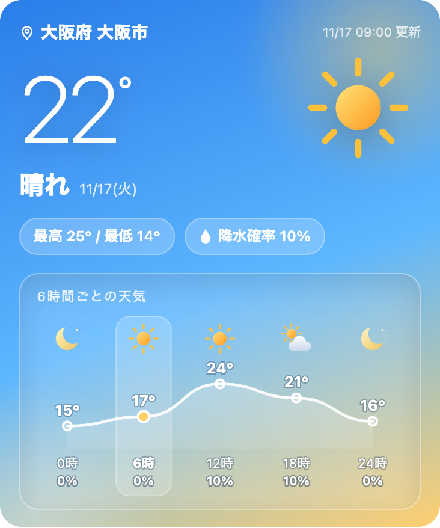
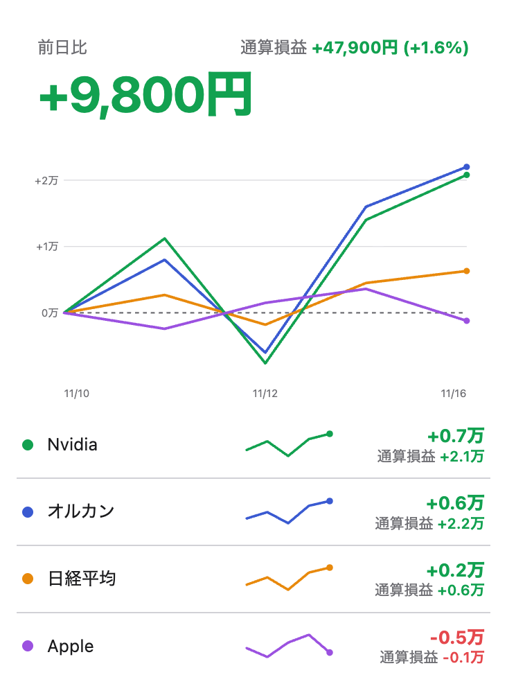

Museのチャットに、ウィジェットを。
天気や乗換案内、チャートからクイズまで。
Museの吹き出しの中で、そのまま動くウィジェットを追加できます。
インストールはプロンプトを入力するだけ！
miwidgets.com/register.txt のウィジェットを登録して
- プロンプトをコピー
- Museのチャットに貼って送信
- 「明日の新宿の天気をウィジェットで見せて」と頼むだけ
- 無料
- オープンソース（MIT）
- ソースはGitHubで公開




いつもの会話に、ひとつ追加。
「miwidgets.com/register.txt のウィジェットを登録して」だけでOK。